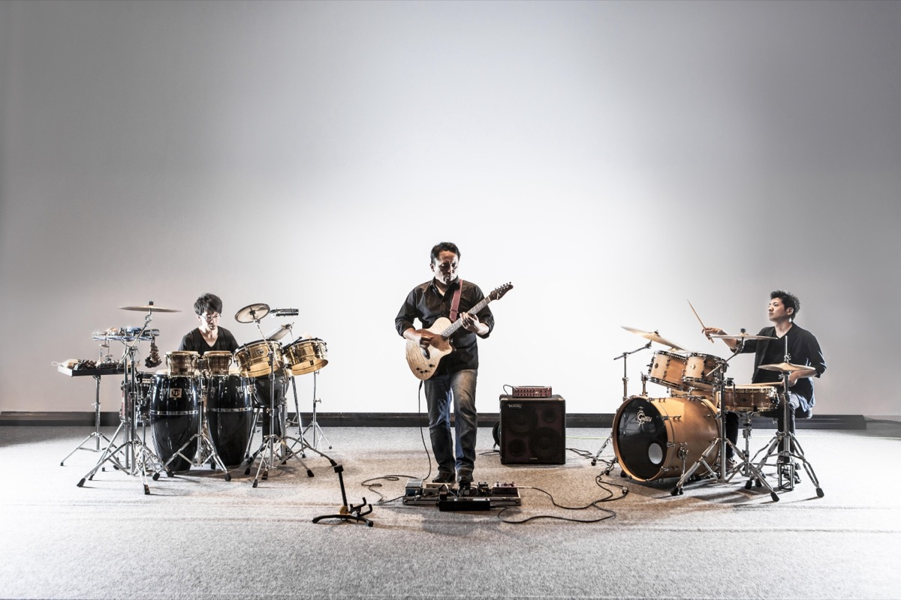
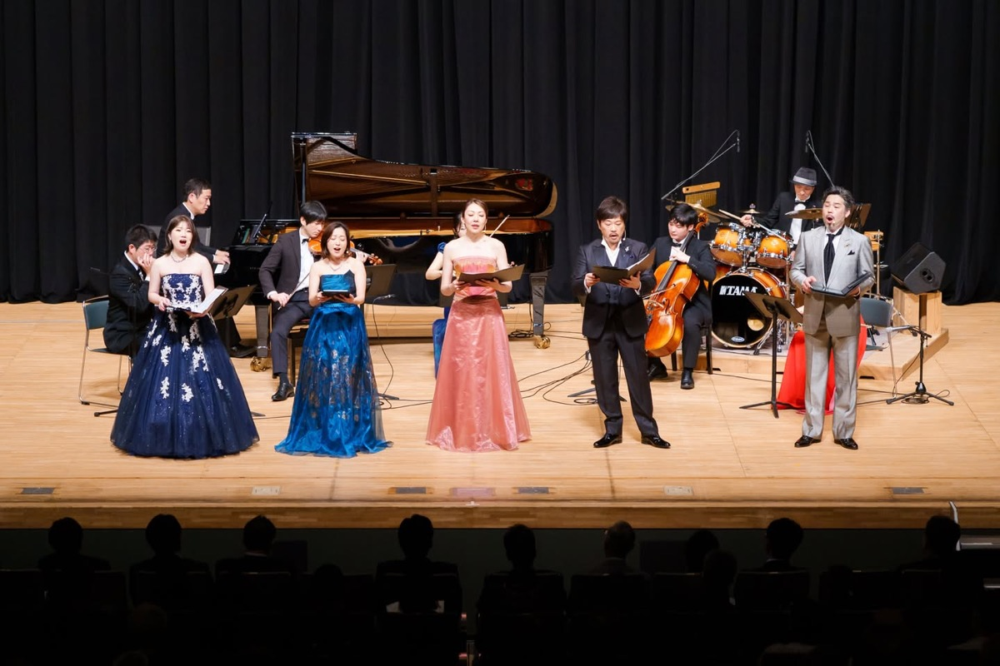
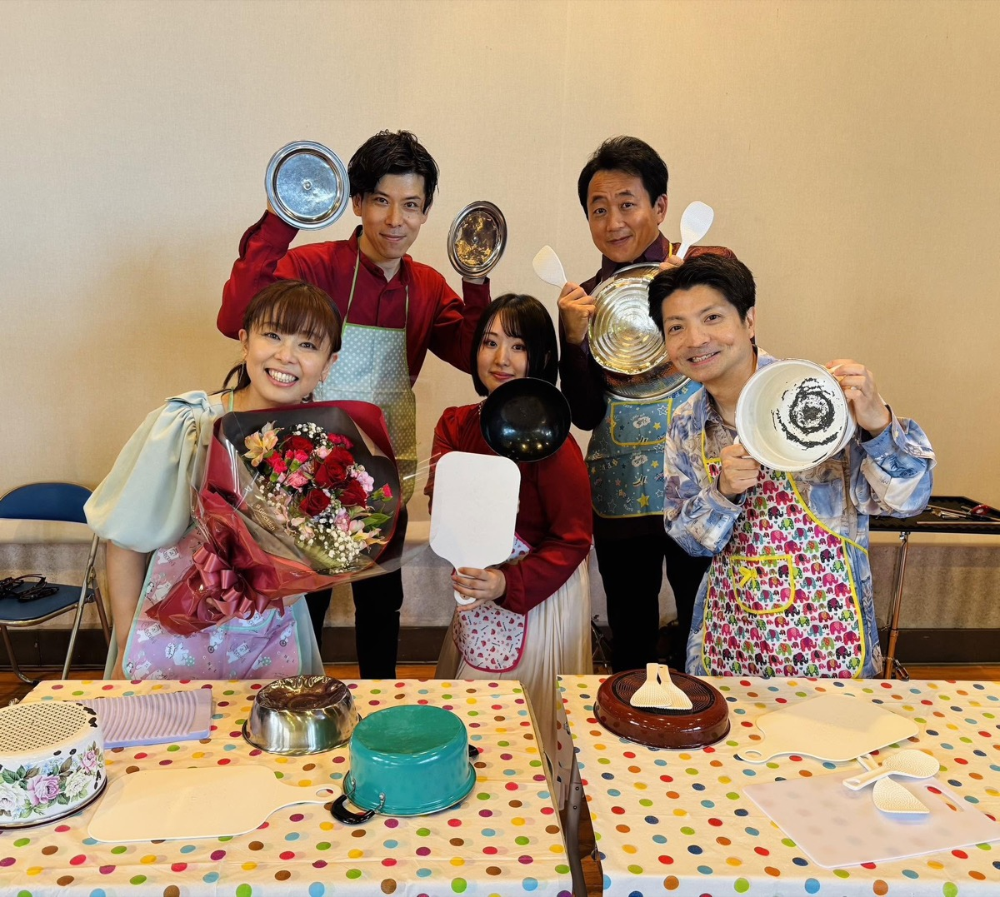
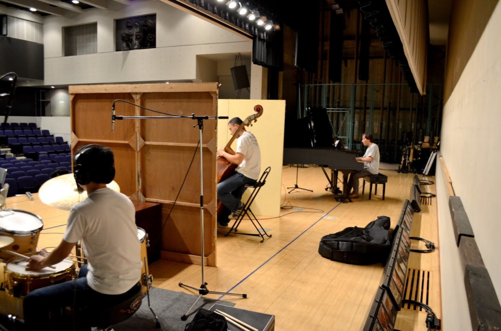

三芳ウインドオーケストラ

2016年4月埼玉県三芳町で創立された市民吹奏楽団。阿部拓也が音楽監督兼常任指揮を務める。楽団代表、後藤裕美と共に、運営、企画、選曲すべてに携わる。「みんなを笑顔に出来る楽団」を目指して活動。定期演奏会や、自主企画公演「MUSE CELEBRATION」や「SUMMER Fantasia Festival」「Grand Ensemble Concert」を開催。
2019年には、社会福祉法人入間東部福祉会「三芳太陽の家」様からのご依頼により音楽鑑賞会を実施。その他かしの木ケアセンターや、おなかま食堂などへ訪問演奏をするなど地元に根付いた活動を展開。2023年9月17日第4回定期演奏会をキラリふじみにて開催。満員御礼、大盛況のうちに終演。令和5年、三芳町ふるさと大使に任命される。
2024年10月20日第5回定期演奏会(キラリ☆ふじみ)、2025年11月16日第6回定期演奏会(ウェスタ川越)を開催。2026年、結成10周年を迎え、9月には「Lumina MIYOSHI」こけら落とし公演&オープニングイベントにも出演した。
真荷舟 -manifune-

ロックに即興、インプロヴィゼーションの要素を取み、人のもっともプリミティブな領域をグルーブさせながら聴く人それぞれの中にドラマを生み出し続けている。圧倒的な歌唱力と、心を掴む曲を生み出すシンガーソングライター榎田竜路(Vo,Gt)と阿部拓也(ds)の2ピースユニット。サポートメンバーに深野雄一(Perc)。ケニア、オーストラリア、台湾、中国など海外公演も多数行っている。即興をベースとし、自在に変化する繊細かつダイナミックなライヴパフォーマンスには定評がある。様々なシーンでライブ活動を展開中。
映画音楽の制作にも参加しており、太田龍馬監督のドキュメンタリー映画「ミスター・ナチュラルと呼ばれた男」（主演:谷口正次、プロデュース:榎田竜路）では真荷舟として音楽を担当した。
真荷舟 -manifune- official website → ／ 「ミスター・ナチュラルと呼ばれた男」公式サイト →
Mの集い

主に声楽家、弦楽器/ピアノ奏者、そしてドラムを中心とした打楽器奏者でユニットを組み、クラシック、オペラ、ジャズ、邦楽洋楽ポピュラー等ジャンルを問わず、編成にこだわらず自由なスタイルで活動を続けている演奏集団。阿部は2011年よりほぼ全公演に参加。またコラボレーション(「和楽器」「中国等他のアジアの楽器」「踊り」「役者(ストーリー)」「ハーモニカ」等)に力を入れ、各方面のミュージシャンやショーに係る方々からの支持を得ている。NPO法人えむの集いとして学校公演にも力を入れており、企業イベントも多数行っています。
フラワービート

打楽器奏者・山本晶子が、全国各地の音楽現場で活躍するスーパープレイヤーたちと結成したアンサンブルユニット。小中学校の芸術鑑賞会・音楽鑑賞教室を中心に全国で公演を展開。デッキブラシや台所用品までもが工夫次第で楽器に変身するユニークなパフォーマンスや、マリンバを使ったアンサンブルなど、メンバーそれぞれの個性が光る舞台を届けている。阿部拓也もメンバーとして参加。
テノールまみれ
2017年に開始した、実力派テノール歌手たちによる公演シリーズ。毎回驚きの選曲と演出でお届けするコンサートで、リピーター率の高さに定評がある。ニューイヤーコンサートやクリスマスコンサート、「夏の陣」シリーズなど、全国各地で継続的に公演を行っている。阿部拓也はドラムとして参加。
TAKUYA ABE QUARTET
阿部拓也が率いるジャズカルテット。小林真人(p)、前嶋のぞみ(vo)、菅原聡美(sax)というメンバーで、三芳町の農園レストラン「伊左衛門」を舞台に「IZAEMON SPECIAL LIVE」シリーズを定期開催している。
Yukinco Band
フルート奏者・奥野由紀子とのユニット。「Yukiko Okuno Birthday Live」として毎年ライブを開催しており、クラシック奏者たちが繰り広げる本気のエンターテインメントとして人気を博している。阿部拓也はドラムとして参加。
リトル・ピース・パーカッション

阿部拓也がリーダーとなり発足したパーカッションアンサンブル。打楽器をより身近なものに、誰もが楽しめるクラシック作品から、ポップス、ジャズまで幅広い音楽を演奏。主に学校公演や、ホール主催のコンサート、企業イベントなどで演奏している。
横谷基トリオ

1998年に結成。横谷基(p)森田章(b)阿部拓也(ds)の3名で結成。現代音楽作曲家、横谷基がリーダーを務めるジャズピアノトリオ。2017年にはCDをリリース。都内各所にてライブ活動も勢力的に行う。
阿部拓也 YouTube チャンネル
ドラムの演奏動画、レクチャー動画の他、Mの集い/真荷舟/テノールまみれ/阿部拓也カルテット/三芳ウインドオーケストラなどいろいろな動画を配信中。